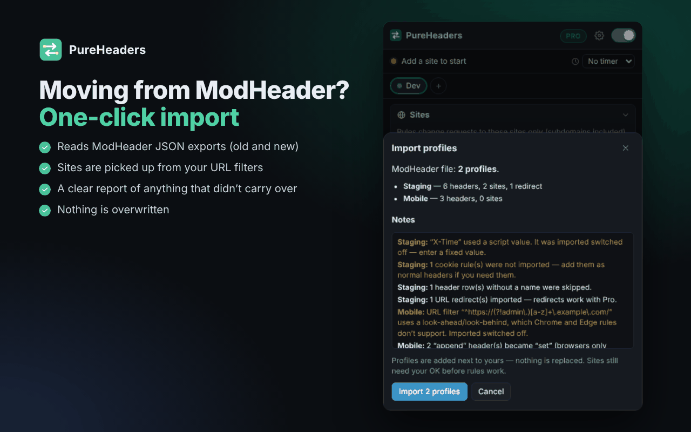
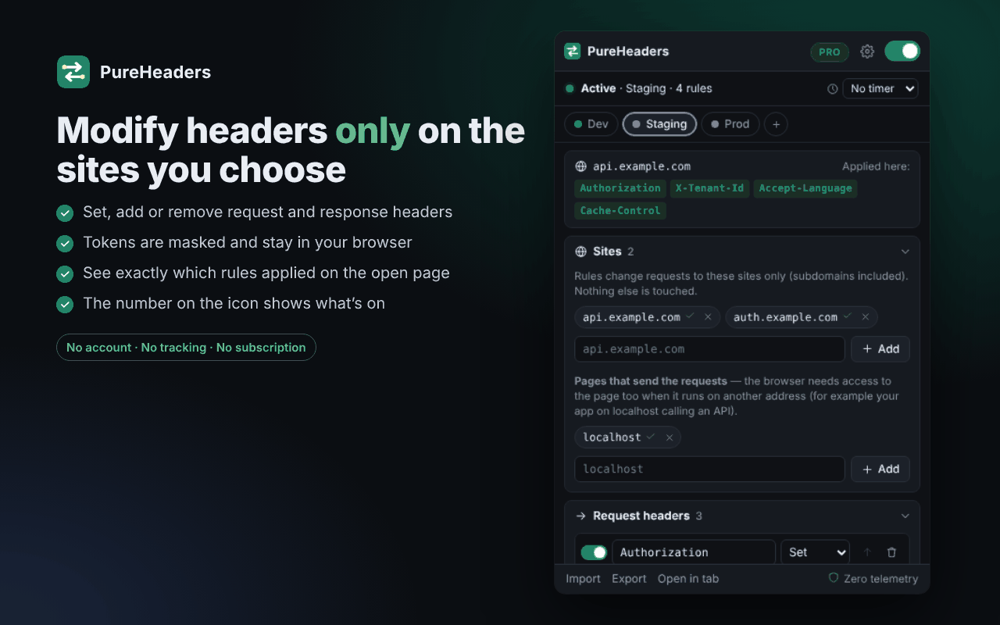
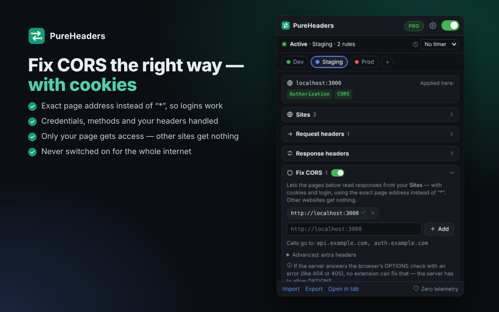
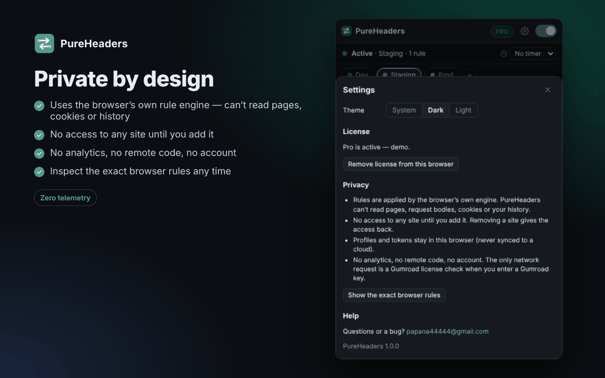

HTTP headers · migration guide
HTTP headers · migration guideModHeader was removed from Chrome and Edge: how to move your header profiles to a safe alternative
Last updated: 30 October 2026 · about 6 minutes to read
- ModHeader is gone from both stores, but it is still installed in browsers that had it.
- Export your profiles: Export → Export JSON → Download JSON.
- Remove ModHeader.
- Import the file into a replacement you have checked (five-point check below).
What happened
ModHeader, a popular extension for changing HTTP request and response headers, had more than 1.6 million installs (roughly 900,000 on Chrome and 700,000 on Edge). Developers, testers and support teams used it every day to add auth tokens, switch environments and test APIs.
In 2026 security researchers at Stripe OLT reported that version 7.0.18 contained a hidden data-collection module: code that could gather the domains you visit, encrypt them and upload them to a remote server once a day. According to the report the collector was switched off by default, but the code, key and schedule were already inside the extension. The same report says the extension also showed ads and opened advertising tabs after updates, including on company-managed computers.
According to press reports, ModHeader was removed from the Chrome Web Store on 10 July 2026 and from Edge Add-ons at about the same time; reports differ on the exact Edge date (June or July 2026). TechRadar has a summary.
The part that matters for you: a header extension sees and changes requests to the sites it runs on. That is why it is useful, and that is also why a dormant collector inside one is a serious problem. It could be switched on later without asking you for any new permission.
Is it still in your browser?
Very likely, yes. Removing an extension from a store does not remove it from browsers where it is already installed. Check:
- Chrome: open
chrome://extensions - Edge: open
edge://extensions
If ModHeader is there, export your profiles first (next step), then remove it. If you manage company computers, check them too: store removal does not clean up existing installs.
On Firefox: Firefox Add-ons has several listings that use the ModHeader name. Before installing any of them, check who the developer is and when it was last updated.
Step 1 — export your profiles from ModHeader
- Open ModHeader.
- Choose Export → Export JSON → Download JSON. You get a
.jsonfile with your profiles. - Now remove ModHeader from
chrome://extensionsoredge://extensions.
The file contains your header values. If some are tokens or API keys, keep the file somewhere private and delete it after importing.
Step 2 — before you pick a replacement, check these five things
A bad header extension can do a lot of damage. Whatever you choose, check:
- Site access. Does it ask for access to all websites at install, or only to the sites you add?
- Its own network requests. In
chrome://extensions, turn on Developer mode, open the extension's service worker and watch the Network tab while you use it. A header tool has little reason to talk to a server. - Remote configuration. Can behaviour be switched on later from a server, without an update? That is exactly how a dormant collector works.
- Unrelated code. Ads, analytics or other bundled SDKs have no place in a header tool.
- Where your values are stored. Tokens should stay on your device, not be synced to someone's cloud.
Step 3 — import into PureHeaders
PureHeaders reads ModHeader JSON exports (the classic format and the newer "sections" format). The import is free.
- Install PureHeaders: Microsoft Edge. Firefox. Chrome.
- The welcome page opens with an Import a JSON export button. Later you can use Import at the bottom of the popup.
- Pick the file from step 1. Before anything is saved you see what is in the file and what did not carry over. Imported profiles are added next to yours; nothing is replaced.
- Add the sites the rules should work on. PureHeaders has access to no sites at install and asks for each site you add.

What the report may tell you
- Script values (
function(...)in ModHeader) are imported switched off. PureHeaders never runs code from an imported file; enter a fixed value instead. - Cookie rules are not imported; add them as normal headers if you need them.
- URL filters with look-ahead or look-behind (
(?!...)) are imported switched off, because Chrome and Edge rules do not support them. - "Append" headers become "set".
- Redirects are imported; they work with Pro.
Step 4 — check that your headers are applied
Open the page you work on and click the PureHeaders icon. The top of the popup shows which rules were applied on this page, and the number on the icon shows how many rules are active. If a rule does not work, the usual reason is that its site was not added or access was not granted.

Two habits that save time: use the auto-off timer (1 or 8 hours) so you never forget a header that breaks a site later, and the main switch to turn everything off in one click.
A note on CORS
Many "Allow CORS" extensions set Access-Control-Allow-Origin: * for every site. That has two problems:
- Browsers reject
*for requests with cookies, so logged-in API calls still fail. - Switched on for the whole web, it lets any page read responses from sites you are logged into.
PureHeaders' Fix CORS works for one page → the API sites you choose, sends the exact origin instead of * and adds Access-Control-Allow-Credentials: true, so requests with cookies work. Other websites get nothing.

localhost:3000 calling your API sites, with cookies.Honest limits: an extension cannot change the server's status code, so if the server answers the preflight (OPTIONS) with an error like 404 or 405, the browser will still block the request; the server has to allow OPTIONS. Cookies to another site may also be blocked by SameSite rules or the browser's third-party cookie settings.
What PureHeaders is, in short
| Free | Request and response headers (up to 6 active), Fix CORS without limits, URL filters, 2 profiles, auto-off timer, a badge with the number of active rules, "Applied on this page" view, ModHeader import, export/import. |
|---|---|
| Pro (one-time purchase, no subscription) | Unlimited headers and profiles, URL redirects, "only this tab" rules, profile colours. |
| Privacy | No account. No content scripts, no tabs permission, no remote configuration, no analytics. Everything is stored locally. The only network request is a license check with Gumroad when you activate Pro. |

Questions
Can I keep using ModHeader if it still works?
You can, but it no longer gets reviewed store updates, and the reported collector code was in the extension itself. I would export and remove it.
Will my tokens be uploaded during import?
No. The file is read in your browser and stored locally. You can check it yourself with the Network tab, as in step 2.
Do I need Pro to migrate?
No. Import is free. Pro is only needed for more than 6 active headers or 2 profiles, redirects and "only this tab".
Other options
If PureHeaders is not for you, these are other replacements people mention. I have not reviewed them in depth, so run the five-point check above: